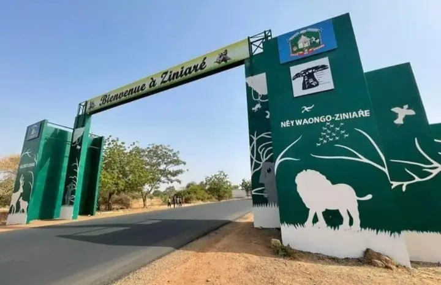

Bienvenue à Ziniare
Les pemiers habitants de ZINIARE furent les nyonyosé et les ninissi. Ils habitaient dans la ville actuel Gilungu.Bassy le Tengsoaba des nyonnyosé eut trois enfants dont une fille qui portait une barbe(Poug-toenga). C'est de l'union entre Poug-toenga et Naaba Zougrana de Tenkodogo que Oubri est né.Grand chasseur ,c'est Oubri,petit fils de Bassy qui revint vers 1132 puis chassa Ninissi,fonda même Ouagadougou. ZINIARE en langue moore signifie "du jamais vu".Ce nom fait référence à un évènement inhabituel qui se serait produit vers l'an 1750,le commerce des galettes pratiqués pour la premiere fois par la mère de Naaba Zombré. Aujourd'hui Ziniare est est le chef lieu de la region du plateau central.Avec une population de 88 299 selon le resencement de 2019, elle regorge d'enormes potentialités touristique et un patrimoine culturel immensement riche attirants sans doute les habitants des autres region à visiter Ziniare. Que le tout puissant bénisse Ziniare!!
